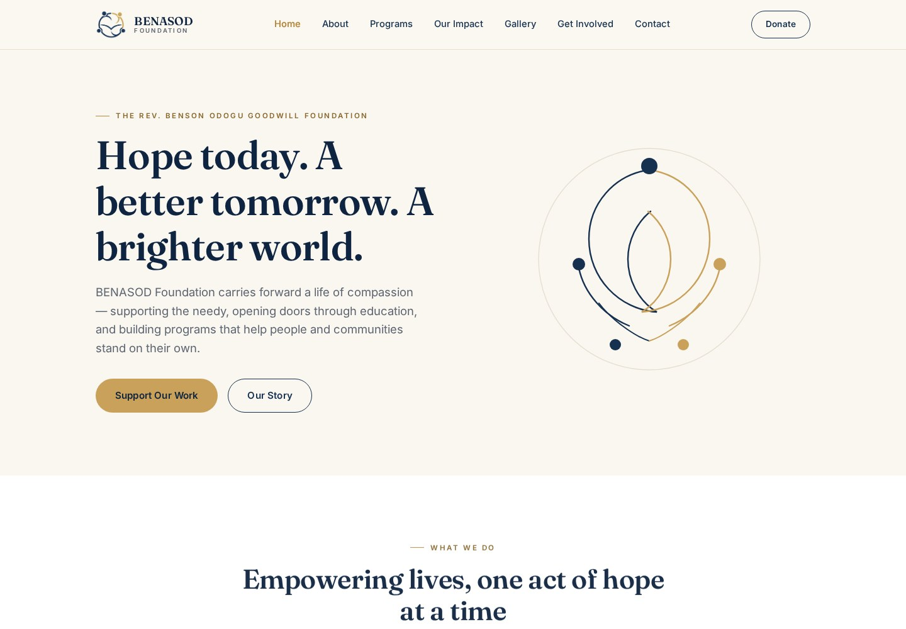

Website project · 2026
BENASOD Foundation
A complete multi-page foundation website with pages for the organisation’s story, programmes, impact, gallery, involvement and contact.
HTMLCSSJavaScriptResponsive
Open project ↗